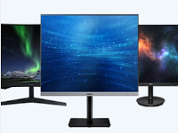

Uw betrouwbare partner voor IT- Diensten en hardware
Voor een professionele IT-partner neemt u contact op met de firma Knokke-PC.
In heel Vlaanderen verzorgen wij IT-diensten voor de kleine en middelgrote ondernemer.
Wij staan dus garant voor een perfecte service, deskundige hulp en correcte werkwijze.
Hieronder vindt u een overzicht van enkele diensten waarvoor u bij ons terecht kunt:
Netwerkbeheer
Netwerkbeheer is haast niet weg te denken uit iedere onderneming. Steeds meer processen worden geautomatiseerd en steeds meer data worden digitaal ingevoerd en opgeslagen. Knokke-PC verzorgt professioneel netwerkbeheer en helpt u met het bouwen en onderhouden van uw computernetwerk en/of lokale server. Dit alles gaat in nauw overleg met u als opdrachtgever en ú bepaalt welke medewerkers toegang krijgen tot welke applicaties. Wij zorgen voor een veilige omgeving waarin iedereen optimaal kan functioneren.
Back-up
Als we het hebben over veiligheid dan is een goede back-up van uw data van levensbelang. Wanneer u Knokke-PC inschakelt, hoeft u zich nooit meer zorgen te maken over de opslag van uw gegevens. Wij bieden volledige back-upsystemen op locatie en online. Ook testen we regelmatig of de back-up goed werkt. Weer een zorg minder voor u!
Cloud
Door te werken in de cloud kunnen uw medewerkers vanaf iedere locatie hun documenten raadplegen en verder werken. Er zijn zelfs mogelijkheden om met meerdere mensen tegelijk in hetzelfde project te werken, vanaf verschillende locaties. Knokke-PC helpt u graag met oplossingen op het gebied van cloud computing.
Support
Knokke-PC biedt een uitstekende supportdienst voor al haar klanten. Wij zijn snel bereikbaar, werken efficiënt en kunnen op afstand uw scherm overnemen zodat wij u niet hoeven lastig te vallen met allerlei vragen en opdrachten. Dát is de support en service die wij bieden!
Waarom voor ons kiezen?
| Diensten | Knokke-PC | Concurrentie |
|---|---|---|
| 7⁄7 Support | ✔ | ❌ |
| 3 jaar garantie op hardware | ✔ | ❌ |
| Offerte binnen de 24u | ✔ | ❌ |
| 99% Cloud Uptime | ✔ | ❌ |
Neem een kijkje op onze webshop!
laptops

Smartphones

Monitoren
Netwerk